3092027.01 出刊
社會工作
社工、社會安全、社會福利、社區、兒少保護
11/1 截稿微型
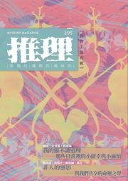
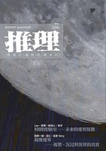
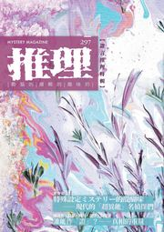
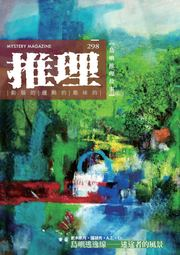
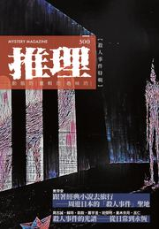
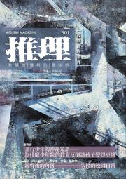
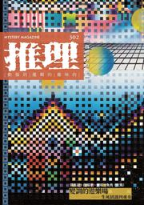
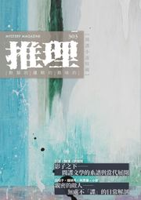
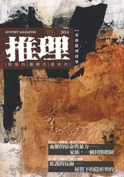
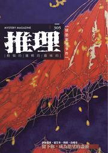
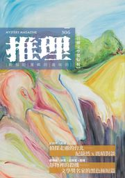
題材不限，原創為唯一門檻。懸疑、推理、恐怖三種氣味，任一種都收。小說、詩、評論、散文，六個類別長期開放。
最近的截稿日：11/1（第 309 期・社會工作）
長度上限與稿酬。收稿狀態依各期已排定的篇數即時判定。
| 短篇小說 | 20,000 字以內 | 每字 0.1 元，單篇上限 1,000 元；寄贈當期雜誌 1 冊 | 16 期收稿中 |
|---|---|---|---|
| 微型小說 | 3,000 字以內 | 寄贈當期雜誌 1 冊 | 14 期收稿中 |
| 海內外文學評論 | 800 字以內 | 寄贈當期雜誌 1 冊 | 4 期收稿中 |
| 影視、遊戲、動漫評介 | 600 字以內 | 寄贈當期雜誌 1 冊 | 不限檔期・特別歡迎 |
| 現代詩創作 | 40 行以內 | 寄贈當期雜誌 1 冊 | 不限檔期・特別歡迎 |
| 現代散文創作 | 1,500 字以內 | 寄贈當期雜誌 1 冊 | 不限檔期・特別歡迎 |
期數為暫時排定，實際刊登請依編輯部聯繫信件為準。
3092027.01 出刊
社工、社會安全、社會福利、社區、兒少保護
11/1 截稿微型
3102027.02 出刊
服飾、配件、穿著、褲子、外套、衣服
12/1 截稿評論
3112027.03 出刊
失物、錯認、生活裡的小異常，無屍體無犯罪
1/1 截稿微型短篇評論
3132027.05 出刊
人工智慧
3/1 截稿短篇評論
3152027.07 出刊
新聞報導、記者、輿論公審、爆料與名嘴、媒體造神與獵巫
5/1 截稿微型短篇
3162027.08 出刊
6/1 截稿微型短篇
3172027.09 出刊
和「喝」這個動作有關、酒、咖啡、茶、水
7/1 截稿短篇評論
3182027.10 出刊
鄉野空間、鄉村
8/1 截稿微型短篇
3192027.11 出刊
9/1 截稿微型短篇
3202027.12 出刊
哲學思考、哲學家
10/1 截稿短篇
3212028.01 出刊
汽車、火車、公車、飛機、高鐵、捷運
11/1 截稿微型短篇
3222028.02 出刊
檢察系統
12/1 截稿微型短篇
3232028.03 出刊
1/1 截稿微型短篇
3242028.04 出刊
雨、雪、雷、風，不收晴朗、陰天
2/1 截稿微型短篇
3252028.05 出刊
3/1 截稿微型短篇
3262028.06 出刊
4/1 截稿微型短篇
3272028.07 出刊
黑歷史
5/1 截稿微型短篇
3282028.08 出刊
體育、賽事
6/1 截稿微型短篇
為什麼稿酬這麼少？
《推理》是月刊，為控制成本支出，目前僅靠長期訂閱與雜誌補助勉力營運，為維持內容與出刊品質，僅能調低稿費支付標準，造成不解或困擾，祈請見諒。
一次可以投幾篇？
一篇。手上有多篇就分次填寫表單，各自送出。
在部落格或社群貼過的作品可以投嗎？
可以。只在網路平臺發表過不影響投稿，本刊出版發行前自行下架即可。已經以紙本或電子形式出版發行過的作品不收。
刊登想用筆名，稿酬與贈書怎麼寄？
表單的真實姓名與筆名兩欄都填。刊登署名用筆名，稿酬與贈書寄給真實姓名與通訊地址。
人在海外可以投稿嗎？
可以。不具中華民國身分證、且無臺灣銀行發行之帳戶或臺灣通訊地址者，稿酬支付方式另行討論。
多久會知道結果？
通過與否都會以電子郵件回覆。近期來稿，九成在 4 週內收到審查結果。
著作權會怎麼處理？
著作人格權留在作者身上。雜誌取得其餘全部權利，並得以非專屬授權方式授予第三方重製，或透過網路提供服務。
以下表單即為投稿入口。標註星號的欄位必填，請以繁體中文填寫。
▼